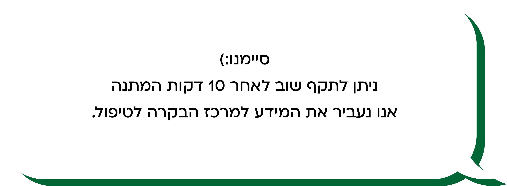

<div class="thanks">
    
    <div  *ngIf="timeisup()==2">
        
        <p class="msg">.כבר תיקפת ב-5 הדקות האחרונות. פנייתך שמורה במערכת <br> .יש לתקף שנית רק אם זמן ההמתנה ארוך, או עם סיבה משמעותית
            <br>  .לתשומת הלב, תיקוף שלישי בתוך 10 דקות ינעל את המשתמש למשך שעה  </p>
           

    </div>
    <!-- <p class="ps">.שים לב שהתיקוף במערכת לא פוטרת אותך מלתקף את הרב קו באוטובוס*</p> -->
    <!--  -->
</div>